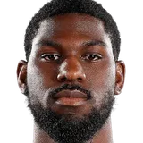

Played 3 seasons for 3 teams; his teams went 17–35 in his games.
Compare Alex Poythress with…
Final NBA finish, season by season
Title Finals Other playoffs Missed playoffs. #1 = champion; the dashed line is last place that season. Each point opens that season's final standings.
All 30 teams ranked in 2017-18, his best finish (#10)Teammate help
 Victor Oladipo4.21 season
Victor Oladipo4.21 season Dario Saric0.21 season
Dario Saric0.21 season Trae Young0.21 season
Trae Young0.21 season
Career
Regular seasons 1946-47 to 2026-27, games through Nov. 17, 2026. Records include 2026-27 to date; season counts and finishes use completed seasons. Each card opens its board. How we count.

Latest completed seasons
Season by season
Newest first; every header sorts. Final NBA finish is the team's rank among all teams that season (#1 = champion) and opens that season's standings. "Without him" uses the team-season window; the span line counts only the games between his first and last game for the team.
| 2018-19 | #26 of 30 | 29–53 35.4% | Missed playoffs | 21 of 82 | 7–14 33.3% | 22–39 36.1%span: 15–30, gap 0.0 | −2.7 | |
| 2017-18 | #10 of 30 | 48–34 58.5% | Lost 1st round 3–4 | 25 of 82 | 10–15 40.0% | 38–19 66.7%span: 37–19, gap −26.1 | −26.7 | |
| 2016-17 | #27 of 30 | 28–54 34.1% | Missed playoffs | 6 of 82 | 0–6 0.0% | 28–48 36.8%span: N/A, gap N/A | −36.8 |
On/off, starts and close games
From the lineup data, 1996-97 on. On/off is net points per 100 possessions with him on the floor minus off, a different unit from the win-rate gaps. Started and off the bench are team records in those games; close games are those within 5 points in the last 5 minutes with him on the floor.
| 2018-19 | −4.0 | 0–1 0.0% | 7–13 35.0% | 2–3 40.0% | |
| 2017-18 | −12.8 | N/A | 10–15 40.0% | 0–2 0.0% | |
| 2016-17 | +2.0 | 0–1 0.0% | 0–5 0.0% | 0–1 0.0% |
Teammate help by season
Help = Teammates Score points for honors won that season by teammates who shared a game with him. How help works.
- 2018-19
 Atlanta
Trae Young All-Rookie 1st21 g
Atlanta
Trae Young All-Rookie 1st21 g Kevin Huerter All-Rookie 2nd20 g
Kevin Huerter All-Rookie 2nd20 g
More: last season's honors and other teammates
Help coming in (teammates' honors the season before): 0.1 · from John Collins (0.1)
Other teammates (no honors that season): Vince Carter 21 g, DeAndre Bembry 21 g, Kent Bazemore 20 g, Alex Len 19 g, Jeremy Lin 18 g, Omari Spellman 13 g, Dewayne Dedmon 12 g, Taurean Prince 11 g, Miles Plumlee 10 g, Tyler Dorsey 8 g, Justin Anderson 7 g, John Collins 6 g, Jaylen Adams 5 g, BJ Johnson 3 g and 1 more
- 2017-18
 Indiana
Victor Oladipo All-NBA 3rdAll-StarAll-Def 1stMIP20 g
Indiana
Victor Oladipo All-NBA 3rdAll-StarAll-Def 1stMIP20 g
More: last season's honors and other teammates
Help coming in (teammates' honors the season before): 0
Other teammates (no honors that season): Cory Joseph 25 g, Lance Stephenson 25 g, Thaddeus Young 24 g, Bojan Bogdanovic 23 g, Domantas Sabonis 23 g, Joseph Young 23 g, Darren Collison 22 g, TJ Leaf 19 g, Al Jefferson 15 g, Myles Turner 14 g, Damien Wilkins 10 g, Ike Anigbogu 9 g, Glenn Robinson III 4 g, Trevor Booker 3 g and 3 more
- 2016-17
 Philadelphia
Dario Saric All-Rookie 1st5 g
Philadelphia
Dario Saric All-Rookie 1st5 g
More: last season's honors and other teammates
Help coming in (teammates' honors the season before): 0
Other teammates (no honors that season): TJ McConnell 6 g, Nik Stauskas 6 g, Gerald Henderson 6 g, Tiago Splitter 6 g, Timothe Luwawu 6 g, Richaun Holmes 6 g, Justin Anderson 6 g, Shawn Long 5 g
Record against each opponent
Regular season, completed seasons: 52 games, 17–35, against 25 franchises. Grouped by franchise (named as today); game lists keep each team's name that season.
| Games list | |||||||
|---|---|---|---|---|---|---|---|
| 4 | 2–2 | 50.0% | 0 | N/A | 2016-17 to 2018-19 | ||
| 4 | 0–4 | 0.0% | −4 | N/A | 2016-17 to 2018-19 | ||
| 4 | 0–4 | 0.0% | −4 | N/A | 2016-17 to 2018-19 | ||
| 3 | 2–1 | 66.7% | +1 | N/A | 2017-18 to 2018-19 | ||
| 3 | 1–2 | 33.3% | −1 | N/A | 2017-18 to 2018-19 | ||
| 3 | 2–1 | 66.7% | +1 | N/A | 2017-18 to 2018-19 | ||
| 3 | 2–1 | 66.7% | +1 | N/A | 2017-18 to 2018-19 | ||
| 2 | 2–0 | 100.0% | +2 | N/A | 2017-18 | ||
| 2 | 1–1 | 50.0% | 0 | N/A | 2016-17 to 2017-18 | ||
| 2 | 0–2 | 0.0% | −2 | N/A | 2017-18 to 2018-19 | ||
| 2 | 1–1 | 50.0% | 0 | N/A | 2017-18 to 2018-19 | ||
| 2 | 0–2 | 0.0% | −2 | N/A | 2017-18 to 2018-19 | ||
| 2 | 0–2 | 0.0% | −2 | N/A | 2016-17 to 2017-18 | ||
| 2 | 2–0 | 100.0% | +2 | N/A | 2017-18 | ||
| 2 | 0–2 | 0.0% | −2 | N/A | 2017-18 | ||
| 2 | 1–1 | 50.0% | 0 | N/A | 2017-18 to 2018-19 | ||
| 2 | 1–1 | 50.0% | 0 | N/A | 2017-18 | ||
| 1 | 0–1 | 0.0% | −1 | N/A | 2018-19 | ||
| 1 | 0–1 | 0.0% | −1 | N/A | 2018-19 | ||
| 1 | 0–1 | 0.0% | −1 | N/A | 2018-19 | ||
| 1 | 0–1 | 0.0% | −1 | N/A | 2017-18 | ||
| 1 | 0–1 | 0.0% | −1 | N/A | 2017-18 | ||
| 1 | 0–1 | 0.0% | −1 | N/A | 2018-19 | ||
| 1 | 0–1 | 0.0% | −1 | N/A | 2016-17 | ||
| 1 | 0–1 | 0.0% | −1 | N/A | 2017-18 |
Rows add up to his career record in his games. A playoff series counts when he played in it; early round-robin games show as games only. How we count.
Arrival and departure
Team wins per 82 games the season before he arrived vs his first season there, and his last season vs the season after he left. Per 82 so short seasons compare fairly. These are team records, not a measure of what he did.
| Left | 2019-20 | 2018-19: 29–53 29.0 per 82 | 2019-20: 20–47 24.5 per 82 | −4.5 wins | |
| Arrived | 2018-19 | 2017-18: 24–58 24.0 per 82 | 2018-19: 29–53 29.0 per 82 | +5.0 wins | |
| Left | 2018-19 | 2017-18: 48–34 48.0 per 82 | 2018-19: 48–34 48.0 per 82 | +0.0 wins | |
| Arrived | 2017-18 | 2016-17: 42–40 42.0 per 82 | 2017-18: 48–34 48.0 per 82 | +6.0 wins | |
| Left | 2017-18 | 2016-17: 28–54 28.0 per 82 | 2017-18: 52–30 52.0 per 82 | +24.0 wins | |
| Arrived | 2016-17 | 2015-16: 10–72 10.0 per 82 | 2016-17: 28–54 28.0 per 82 | +18.0 wins |